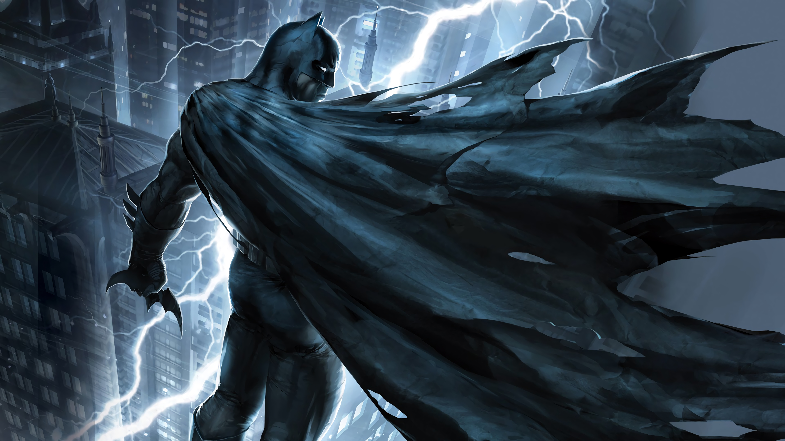

باتمان
باتمان أو الرجل الوطواط هو شخصية خيالية لبطل كتب مصورة خارق من دي سي كومكس (DC Comics). ابتكر الشخصية الفنان بوب كين والكاتب بيل فينغر. كان أول ظهور للشخصية في شهر مايو عام 1939. حين ظهر في العدد رقم 27 من مجلة القصص المصورة ديتكتيف كومكس عام 1939 ومنذ ذلك الوقت أصبح هو وسوبرمان وسبايدرمان، أشهر الأبطال الخارقين الخياليين، وقد ظهر كل منهم في عدة أفلام سينمائية ناجحة.
معلومات النشر
- الناشر : دي سي كومكس
- الظهور الأول : العدد رقم 27 من مجلة ديتكتيف كومكس
(مايو 1939)
- المبتكر : بيل فينغر
بوب كين
- الصوت : بالعربي: مروان فرحات
- بواسطة : فؤاد شمص
تصفح عن فلم باتمان